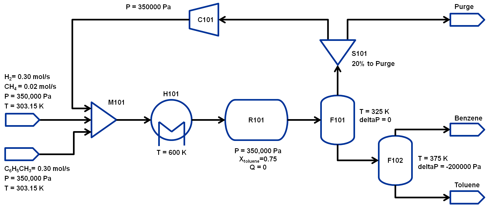

HDA Flowsheet Simulation and Optimization
Learning outcomes
Construct a steady-state flowsheet using the IDAES unit model library
Connecting unit models in a flowsheet using Arcs
Using the SequentialDecomposition tool to initialize a flowsheet with
recycle
Fomulate and solve an optimization problem
Problem Statement
Hydrodealkylation is a chemical reaction that often involves reacting an
aromatic hydrocarbon in the presence of hydrogen gas to form a simpler
aromatic hydrocarbon devoid of functional groups. In this example,
toluene will be reacted with hydrogen gas at high temperatures to form
benzene via the following reaction:
C6H5CH3 + H2 → C6H6 + CH4
This reaction is often accompanied by an equilibrium side reaction which
forms diphenyl, which we will neglect for this example.
This example is based on the 1967 AIChE Student Contest problem as
present by Douglas, J.M., Chemical Design of Chemical Processes, 1988,
McGraw-Hill.
The flowsheet that we will be using for this module is shown below with
the stream conditions. We will be processing toluene and hydrogen to
produce at least 370 TPY of benzene. As shown in the flowsheet, there
are two flash tanks, F101 to separate out the non-condensibles and F102
to further separate the benzene-toluene mixture to improve the benzene
purity. Note that typically a distillation column is required to obtain
high purity benzene but that is beyond the scope of this workshop. The
non-condensibles separated out in F101 will be partially recycled back
to M101 and the rest will be either purged or combusted for power
generation.We will assume ideal gas for this flowsheet. The properties
required for this module are available in the same directory:
hda_ideal_VLE.py
hda_reaction.py
The state variables chosen for the property package are flows of
component by phase, temperature and pressure. The components
considered are: toluene, hydrogen, benzene and methane. Therefore,
every stream has 8 flow variables, 1 temperature and 1 pressure
variable.

Importing required pyomo and idaes components
To construct a flowsheet, we will need several components from the pyomo
and idaes package. Let us first import the following components from
Pyomo: - Constraint (to write constraints) - Var (to declare variables)
- ConcreteModel (to create the concrete model object) - Expression (to
evaluate values as a function of variables defined in the model) -
Objective (to define an objective function for optimization) -
SolverFactory (to solve the problem) - TransformationFactory (to apply
certain transformations) - Arc (to connect two unit models) -
SequentialDecomposition (to initialize the flowsheet in a sequential
mode)
For further details on these components, please refer to the pyomo
documentation: https://pyomo.readthedocs.io/en/latest/
from pyomo.environ import (Constraint,
Var,
ConcreteModel,
Expression,
Objective,
SolverFactory,
TransformationFactory,
value)
from pyomo.network import Arc, SequentialDecomposition
From idaes, we will be needing the FlowsheetBlock and the following unit
models: - Mixer - Heater - StoichiometricReactor - Flash - Separator
(splitter) - PressureChanger
from idaes.core import FlowsheetBlock
from idaes.models.unit_models import (PressureChanger,
Mixer,
Separator as Splitter,
Heater,
StoichiometricReactor)
Inline Exercise: Now, import the remaining unit models highlighted in
blue above and run the cell using Shift+Enter after typing in the
code.
#Todo: import flash model from idaes.models.unit_models
from idaes.models.unit_models import Flash
We will also be needing some utility tools to put together the flowsheet
and calculate the degrees of freedom.
from idaes.models.unit_models.pressure_changer import ThermodynamicAssumption
from idaes.core.util.model_statistics import degrees_of_freedom
# Import idaes logger to set output levels
import idaes.logger as idaeslog
Importing required thermo and reaction package
The final set of imports are to import the thermo and reaction package
for the HDA process. We have created a custom thermo package that
assumes Ideal Gas with support for VLE.
The reaction package here is very simple as we will be using only a
StochiometricReactor and the reaction package consists of the
stochiometric coefficients for the reaction and the parameter for the
heat of reaction.
Let us import the following modules and they are in the same directory
as this jupyter notebook:
from idaes_examples.common.hda import hda_ideal_VLE as thermo_props
from idaes_examples.common.hda import hda_reaction as reaction_props
Constructing the Flowsheet
We have now imported all the components, unit models, and property
modules we need to construct a flowsheet. Let us create a ConcreteModel
and add the flowsheet block as we did in module 1.
m = ConcreteModel()
m.fs = FlowsheetBlock(dynamic=False)
We now need to add the property packages to the flowsheet. Unlike Module
1, where we only had a thermo property package, for this flowsheet we
will also need to add a reaction property package.
m.fs.thermo_params = thermo_props.HDAParameterBlock()
m.fs.reaction_params = reaction_props.HDAReactionParameterBlock(
property_package=m.fs.thermo_params)
Adding Unit Models
Let us start adding the unit models we have imported to the flowsheet.
Here, we are adding the Mixer (assigned a name M101) and a Heater
(assigned a name H101). Note that, all unit models need to be given a
property package argument. In addition to that, there are several
arguments depending on the unit model, please refer to the documentation
for more details
(https://idaes-pse.readthedocs.io/en/latest/technical_specs/model_libraries/generic/unit_models/index.html).
For example, the Mixer unit model here is given a list consisting of
names to the three inlets.
m.fs.M101 = Mixer(property_package=m.fs.thermo_params,
inlet_list=["toluene_feed", "hydrogen_feed", "vapor_recycle"])
m.fs.H101 = Heater(property_package=m.fs.thermo_params,
has_pressure_change=False,
has_phase_equilibrium=True)
Inline Exercise: Let us now add the StoichiometricReactor(assign the
name R101) and pass the following arguments:
“property_package”: m.fs.thermo_params
“reaction_package”: m.fs.reaction_params
“has_heat_of_reaction”: True
“has_heat_transfer”: True
“has_pressure_change”: False
#Todo: Add reactor with the specifications above
m.fs.R101 = StoichiometricReactor(
property_package=m.fs.thermo_params,
reaction_package=m.fs.reaction_params,
has_heat_of_reaction=True,
has_heat_transfer=True,
has_pressure_change=False)
Let us now add the Flash(assign the name F101) and pass the following
arguments:
“property_package”: m.fs.thermo_params
“has_heat_transfer”: True
“has_pressure_change”: False
m.fs.F101 = Flash(property_package=m.fs.thermo_params,
has_heat_transfer=True,
has_pressure_change=True)
Let us now add the Splitter(S101), PressureChanger(C101) and the second
Flash(F102).
m.fs.S101 = Splitter(property_package=m.fs.thermo_params,
ideal_separation=False,
outlet_list=["purge", "recycle"])
m.fs.C101 = PressureChanger(
property_package=m.fs.thermo_params,
compressor=True,
thermodynamic_assumption=ThermodynamicAssumption.isothermal)
m.fs.F102 = Flash(property_package=m.fs.thermo_params,
has_heat_transfer=True,
has_pressure_change=True)
Connecting Unit Models using Arcs
We have now added all the unit models we need to the flowsheet. However,
we have not yet specifed how the units are to be connected. To do this,
we will be using the Arc which is a pyomo component that takes in
two arguments: source and destination. Let us connect the outlet
of the mixer(M101) to the inlet of the heater(H101).
m.fs.s03 = Arc(source=m.fs.M101.outlet, destination=m.fs.H101.inlet)
Inline Exercise: Now, connect the H101 outlet to the R101 inlet using
the cell above as a guide.
#Todo: Connect the H101 outlet to R101 inlet
m.fs.s04 = Arc(source=m.fs.H101.outlet, destination=m.fs.R101.inlet)
We will now be connecting the rest of the flowsheet as shown below.
Notice how the outlet names are different for the flash tanks F101 and
F102 as they have a vapor and a liquid outlet.
m.fs.s05 = Arc(source=m.fs.R101.outlet, destination=m.fs.F101.inlet)
m.fs.s06 = Arc(source=m.fs.F101.vap_outlet, destination=m.fs.S101.inlet)
m.fs.s08 = Arc(source=m.fs.S101.recycle, destination=m.fs.C101.inlet)
m.fs.s09 = Arc(source=m.fs.C101.outlet,
destination=m.fs.M101.vapor_recycle)
m.fs.s10 = Arc(source=m.fs.F101.liq_outlet, destination=m.fs.F102.inlet)
We have now connected the unit model block using the arcs. However, each
of these arcs link to ports on the two unit models that are connected.
In this case, the ports consist of the state variables that need to be
linked between the unit models. Pyomo provides a convenient method to
write these equality constraints for us between two ports and this is
done as follows:
TransformationFactory("network.expand_arcs").apply_to(m)
Adding expressions to compute purity and operating costs
In this section, we will add a few Expressions that allows us to
evaluate the performance. Expressions provide a convenient way of
calculating certain values that are a function of the variables defined
in the model. For more details on Expressions, please refer to:
https://pyomo.readthedocs.io/en/latest/pyomo_modeling_components/Expressions.html
For this flowsheet, we are interested in computing the purity of the
product Benzene stream (i.e. the mole fraction) and the operating cost
which is a sum of the cooling and heating cost.
Let us first add an Expression to compute the mole fraction of benzene
in the vap_outlet of F102 which is our product stream. Please note
that the var flow_mol_phase_comp has the index - [time, phase,
component]. As this is a steady-state flowsheet, the time index by
default is 0. The valid phases are [“Liq”, “Vap”]. Similarly the valid
component list is [“benzene”, “toluene”, “hydrogen”, “methane”].
m.fs.purity = Expression(
expr=m.fs.F102.vap_outlet.flow_mol_phase_comp[0, "Vap", "benzene"] /
(m.fs.F102.vap_outlet.flow_mol_phase_comp[0, "Vap", "benzene"]
+ m.fs.F102.vap_outlet.flow_mol_phase_comp[0, "Vap", "toluene"]))
Now, let us add an expression to compute the cooling cost assuming a
cost of 0.212E-4 $/kW. Note that cooling utility is required for the
reactor (R101) and the first flash (F101).
m.fs.cooling_cost = Expression(expr=0.212e-7 * (-m.fs.F101.heat_duty[0]) +
0.212e-7 * (-m.fs.R101.heat_duty[0]))
Now, let us add an expression to compute the heating cost assuming the
utility cost as follows:
Note that the heat duty is in units of watt (J/s).
m.fs.heating_cost = Expression(expr=2.2e-7 * m.fs.H101.heat_duty[0] +
1.9e-7 * m.fs.F102.heat_duty[0])
Let us now add an expression to compute the total operating cost per
year which is basically the sum of the cooling and heating cost we
defined above.
m.fs.operating_cost = Expression(expr=(3600 * 24 * 365 *
(m.fs.heating_cost +
m.fs.cooling_cost)))
Fixing feed conditions
Let us first check how many degrees of freedom exist for this flowsheet
using the degrees_of_freedom tool we imported earlier.
print(degrees_of_freedom(m))
We will now be fixing the toluene feed stream to the conditions shown in
the flowsheet above. Please note that though this is a pure toluene
feed, the remaining components are still assigned a very small non-zero
value to help with convergence and initializing.
m.fs.M101.toluene_feed.flow_mol_phase_comp[0, "Vap", "benzene"].fix(1e-5)
m.fs.M101.toluene_feed.flow_mol_phase_comp[0, "Vap", "toluene"].fix(1e-5)
m.fs.M101.toluene_feed.flow_mol_phase_comp[0, "Vap", "hydrogen"].fix(1e-5)
m.fs.M101.toluene_feed.flow_mol_phase_comp[0, "Vap", "methane"].fix(1e-5)
m.fs.M101.toluene_feed.flow_mol_phase_comp[0, "Liq", "benzene"].fix(1e-5)
m.fs.M101.toluene_feed.flow_mol_phase_comp[0, "Liq", "toluene"].fix(0.30)
m.fs.M101.toluene_feed.flow_mol_phase_comp[0, "Liq", "hydrogen"].fix(1e-5)
m.fs.M101.toluene_feed.flow_mol_phase_comp[0, "Liq", "methane"].fix(1e-5)
m.fs.M101.toluene_feed.temperature.fix(303.2)
m.fs.M101.toluene_feed.pressure.fix(350000)
Similarly, let us fix the hydrogen feed to the following conditions in
the next cell:
m.fs.M101.hydrogen_feed.flow_mol_phase_comp[0, "Vap", "benzene"].fix(1e-5)
m.fs.M101.hydrogen_feed.flow_mol_phase_comp[0, "Vap", "toluene"].fix(1e-5)
m.fs.M101.hydrogen_feed.flow_mol_phase_comp[0, "Vap", "hydrogen"].fix(0.30)
m.fs.M101.hydrogen_feed.flow_mol_phase_comp[0, "Vap", "methane"].fix(0.02)
m.fs.M101.hydrogen_feed.flow_mol_phase_comp[0, "Liq", "benzene"].fix(1e-5)
m.fs.M101.hydrogen_feed.flow_mol_phase_comp[0, "Liq", "toluene"].fix(1e-5)
m.fs.M101.hydrogen_feed.flow_mol_phase_comp[0, "Liq", "hydrogen"].fix(1e-5)
m.fs.M101.hydrogen_feed.flow_mol_phase_comp[0, "Liq", "methane"].fix(1e-5)
m.fs.M101.hydrogen_feed.temperature.fix(303.2)
m.fs.M101.hydrogen_feed.pressure.fix(350000)
Fixing unit model specifications
Now that we have fixed our inlet feed conditions, we will now be fixing
the operating conditions for the unit models in the flowsheet. Let us
set set the H101 outlet temperature to 600 K.
m.fs.H101.outlet.temperature.fix(600)
For the StoichiometricReactor, we have to define the conversion in terms
of toluene. This requires us to create a new variable for specifying the
conversion and adding a Constraint that defines the conversion with
respect to toluene. The second degree of freedom for the reactor is to
define the heat duty. In this case, let us assume the reactor to be
adiabatic i.e. Q = 0.
m.fs.R101.conversion = Var(initialize=0.75, bounds=(0, 1))
m.fs.R101.conv_constraint = Constraint(
expr=m.fs.R101.conversion*m.fs.R101.inlet.
flow_mol_phase_comp[0, "Vap", "toluene"] ==
(m.fs.R101.inlet.flow_mol_phase_comp[0, "Vap", "toluene"] -
m.fs.R101.outlet.flow_mol_phase_comp[0, "Vap", "toluene"]))
m.fs.R101.conversion.fix(0.75)
m.fs.R101.heat_duty.fix(0)
The Flash conditions for F101 can be set as follows.
m.fs.F101.vap_outlet.temperature.fix(325.0)
m.fs.F101.deltaP.fix(0)
Inline Exercise: Set the conditions for Flash F102 to the following
conditions:
T = 375 K
deltaP = -200000
Use Shift+Enter to run the cell once you have typed in your code.
m.fs.F102.vap_outlet.temperature.fix(375)
m.fs.F102.deltaP.fix(-200000)
Let us fix the purge split fraction to 20% and the outlet pressure of
the compressor is set to 350000 Pa.
m.fs.S101.split_fraction[0, "purge"].fix(0.2)
m.fs.C101.outlet.pressure.fix(350000)
Inline Exercise: We have now defined all the feed conditions and the
inputs required for the unit models. The system should now have 0
degrees of freedom i.e. should be a square problem. Please check that
the degrees of freedom is 0.
Use Shift+Enter to run the cell once you have typed in your code.
print(degrees_of_freedom(m))
Initialization
This section will demonstrate how to use the built-in sequential
decomposition tool to initialize our flowsheet.
Let us first create an object for the SequentialDecomposition and
specify our options for this.
seq = SequentialDecomposition()
seq.options.select_tear_method = "heuristic"
seq.options.tear_method = "Wegstein"
seq.options.iterLim = 3
# Using the SD tool
G = seq.create_graph(m)
heuristic_tear_set = seq.tear_set_arcs(G, method="heuristic")
order = seq.calculation_order(G)
Which is the tear stream? Display tear set and order
for o in heuristic_tear_set:
print(o.name)
What sequence did the SD tool determine to solve this flowsheet with the
least number of tears?
for o in order:
print(o[0].name)
fs.H101
fs.R101
fs.F101
fs.S101
fs.C101
fs.M101
The SequentialDecomposition tool has determined that the tear stream is
the mixer outlet. We will need to provide a reasonable guess for this.
tear_guesses = {
"flow_mol_phase_comp": {
(0, "Vap", "benzene"): 1e-5,
(0, "Vap", "toluene"): 1e-5,
(0, "Vap", "hydrogen"): 0.30,
(0, "Vap", "methane"): 0.02,
(0, "Liq", "benzene"): 1e-5,
(0, "Liq", "toluene"): 0.30,
(0, "Liq", "hydrogen"): 1e-5,
(0, "Liq", "methane"): 1e-5},
"temperature": {0: 303},
"pressure": {0: 350000}}
# Pass the tear_guess to the SD tool
seq.set_guesses_for(m.fs.H101.inlet, tear_guesses)
Next, we need to tell the tool how to initialize a particular unit. We
will be writing a python function which takes in a “unit” and calls the
initialize method on that unit.
def function(unit):
unit.initialize(outlvl=idaeslog.INFO)
We are now ready to initialize our flowsheet in a sequential mode. Note
that we specifically set the iteration limit to be 5 as we are trying to
use this tool only to get a good set of initial values such that IPOPT
can then take over and solve this flowsheet for us.
2022-12-07 19:17:20 [INFO] idaes.init.fs.H101.control_volume: Initialization Complete
2022-12-07 19:17:20 [INFO] idaes.init.fs.H101: Initialization Complete: optimal - Optimal Solution Found
2022-12-07 19:17:20 [INFO] idaes.init.fs.R101.control_volume: Initialization Complete
2022-12-07 19:17:20 [INFO] idaes.init.fs.R101: Initialization Complete: optimal - Optimal Solution Found
2022-12-07 19:17:20 [INFO] idaes.init.fs.F101.control_volume: Initialization Complete
2022-12-07 19:17:20 [INFO] idaes.init.fs.F101: Initialization Complete: optimal - Optimal Solution Found
2022-12-07 19:17:20 [INFO] idaes.init.fs.S101.purge_state: Initialization Complete
2022-12-07 19:17:20 [INFO] idaes.init.fs.S101.recycle_state: Initialization Complete
2022-12-07 19:17:20 [INFO] idaes.init.fs.S101: Initialization Step 2 Complete: optimal - Optimal Solution Found
2022-12-07 19:17:20 [INFO] idaes.init.fs.F102.control_volume: Initialization Complete
2022-12-07 19:17:20 [INFO] idaes.init.fs.F102: Initialization Complete: optimal - Optimal Solution Found
2022-12-07 19:17:20 [INFO] idaes.init.fs.C101.control_volume: Initialization Complete
2022-12-07 19:17:20 [INFO] idaes.init.fs.C101: Initialization Complete: optimal - Optimal Solution Found
2022-12-07 19:17:20 [INFO] idaes.init.fs.M101.mixed_state: Initialization Complete
2022-12-07 19:17:20 [INFO] idaes.init.fs.M101: Initialization Complete: optimal - Optimal Solution Found
2022-12-07 19:17:20 [INFO] idaes.init.fs.H101.control_volume: Initialization Complete
2022-12-07 19:17:20 [INFO] idaes.init.fs.H101: Initialization Complete: optimal - Optimal Solution Found
2022-12-07 19:17:21 [INFO] idaes.init.fs.R101.control_volume: Initialization Complete
2022-12-07 19:17:21 [INFO] idaes.init.fs.R101: Initialization Complete: optimal - Optimal Solution Found
2022-12-07 19:17:21 [INFO] idaes.init.fs.F101.control_volume: Initialization Complete
2022-12-07 19:17:21 [INFO] idaes.init.fs.F101: Initialization Complete: optimal - Optimal Solution Found
2022-12-07 19:17:21 [INFO] idaes.init.fs.S101.purge_state: Initialization Complete
2022-12-07 19:17:21 [INFO] idaes.init.fs.S101.recycle_state: Initialization Complete
2022-12-07 19:17:21 [INFO] idaes.init.fs.S101: Initialization Step 2 Complete: optimal - Optimal Solution Found
2022-12-07 19:17:21 [INFO] idaes.init.fs.C101.control_volume: Initialization Complete
2022-12-07 19:17:21 [INFO] idaes.init.fs.C101: Initialization Complete: optimal - Optimal Solution Found
2022-12-07 19:17:21 [INFO] idaes.init.fs.M101.mixed_state: Initialization Complete
2022-12-07 19:17:21 [INFO] idaes.init.fs.M101: Initialization Complete: optimal - Optimal Solution Found
2022-12-07 19:17:21 [INFO] idaes.init.fs.H101.control_volume: Initialization Complete
2022-12-07 19:17:21 [INFO] idaes.init.fs.H101: Initialization Complete: optimal - Optimal Solution Found
2022-12-07 19:17:21 [INFO] idaes.init.fs.R101.control_volume: Initialization Complete
2022-12-07 19:17:21 [INFO] idaes.init.fs.R101: Initialization Complete: optimal - Optimal Solution Found
2022-12-07 19:17:21 [INFO] idaes.init.fs.F101.control_volume: Initialization Complete
2022-12-07 19:17:21 [INFO] idaes.init.fs.F101: Initialization Complete: optimal - Optimal Solution Found
2022-12-07 19:17:21 [INFO] idaes.init.fs.S101.purge_state: Initialization Complete
2022-12-07 19:17:21 [INFO] idaes.init.fs.S101.recycle_state: Initialization Complete
2022-12-07 19:17:21 [INFO] idaes.init.fs.S101: Initialization Step 2 Complete: optimal - Optimal Solution Found
2022-12-07 19:17:21 [INFO] idaes.init.fs.C101.control_volume: Initialization Complete
2022-12-07 19:17:21 [INFO] idaes.init.fs.C101: Initialization Complete: optimal - Optimal Solution Found
2022-12-07 19:17:21 [INFO] idaes.init.fs.M101.mixed_state: Initialization Complete
2022-12-07 19:17:21 [INFO] idaes.init.fs.M101: Initialization Complete: optimal - Optimal Solution Found
2022-12-07 19:17:21 [INFO] idaes.init.fs.H101.control_volume: Initialization Complete
2022-12-07 19:17:21 [INFO] idaes.init.fs.H101: Initialization Complete: optimal - Optimal Solution Found
2022-12-07 19:17:21 [INFO] idaes.init.fs.R101.control_volume: Initialization Complete
2022-12-07 19:17:21 [INFO] idaes.init.fs.R101: Initialization Complete: optimal - Optimal Solution Found
2022-12-07 19:17:21 [INFO] idaes.init.fs.F101.control_volume: Initialization Complete
2022-12-07 19:17:21 [INFO] idaes.init.fs.F101: Initialization Complete: optimal - Optimal Solution Found
2022-12-07 19:17:21 [INFO] idaes.init.fs.S101.purge_state: Initialization Complete
2022-12-07 19:17:21 [INFO] idaes.init.fs.S101.recycle_state: Initialization Complete
2022-12-07 19:17:21 [INFO] idaes.init.fs.S101: Initialization Step 2 Complete: optimal - Optimal Solution Found
2022-12-07 19:17:21 [INFO] idaes.init.fs.C101.control_volume: Initialization Complete
2022-12-07 19:17:21 [INFO] idaes.init.fs.C101: Initialization Complete: optimal - Optimal Solution Found
2022-12-07 19:17:21 [INFO] idaes.init.fs.M101.mixed_state: Initialization Complete
2022-12-07 19:17:21 [INFO] idaes.init.fs.M101: Initialization Complete: optimal - Optimal Solution Found
2022-12-07 19:17:21 [INFO] idaes.init.fs.H101.control_volume: Initialization Complete
2022-12-07 19:17:21 [INFO] idaes.init.fs.H101: Initialization Complete: optimal - Optimal Solution Found
2022-12-07 19:17:21 [INFO] idaes.init.fs.R101.control_volume: Initialization Complete
2022-12-07 19:17:22 [INFO] idaes.init.fs.R101: Initialization Complete: optimal - Optimal Solution Found
2022-12-07 19:17:22 [INFO] idaes.init.fs.F101.control_volume: Initialization Complete
2022-12-07 19:17:22 [INFO] idaes.init.fs.F101: Initialization Complete: optimal - Optimal Solution Found
2022-12-07 19:17:22 [INFO] idaes.init.fs.S101.purge_state: Initialization Complete
2022-12-07 19:17:22 [INFO] idaes.init.fs.S101.recycle_state: Initialization Complete
2022-12-07 19:17:22 [INFO] idaes.init.fs.S101: Initialization Step 2 Complete: optimal - Optimal Solution Found
2022-12-07 19:17:22 [INFO] idaes.init.fs.C101.control_volume: Initialization Complete
2022-12-07 19:17:22 [INFO] idaes.init.fs.C101: Initialization Complete: optimal - Optimal Solution Found
2022-12-07 19:17:22 [INFO] idaes.init.fs.M101.mixed_state: Initialization Complete
2022-12-07 19:17:22 [INFO] idaes.init.fs.M101: Initialization Complete: optimal - Optimal Solution Found
WARNING: Wegstein failed to converge in 3 iterations
2022-12-07 19:17:22 [INFO] idaes.init.fs.F102.control_volume: Initialization Complete
2022-12-07 19:17:22 [INFO] idaes.init.fs.F102: Initialization Complete: optimal - Optimal Solution Found
Inline Exercise: We have now initialized the flowsheet. Let us run
the flowsheet in a simulation mode to look at the results. To do
this, complete the last line of code where we pass the model to the
solver. You will need to type the following:
results = solver.solve(m, tee=True)
Use Shift+Enter to run the cell once you have typed in your code.
# Create the solver object
from idaes.core.solvers import get_solver
solver = get_solver()
# Solve the model
results = solver.solve(m, tee=True)
Ipopt 3.13.2: nlp_scaling_method=gradient-based
tol=1e-06
**************************************************************************
This program contains Ipopt, a library for large-scale nonlinear optimization.
Ipopt is released as open source code under the Eclipse Public License (EPL).
For more information visit http://projects.coin-or.org/Ipopt
This version of Ipopt was compiled from source code available at
https://github.com/IDAES/Ipopt as part of the Institute for the Design of
Advanced Energy Systems Process Systems Engineering Framework (IDAES PSE
Framework) Copyright (c) 2018-2019. See https://github.com/IDAES/idaes-pse.
This version of Ipopt was compiled using HSL, a collection of Fortran codes
for large-scale scientific computation. All technical papers, sales and
publicity material resulting from use of the HSL codes within IPOPT must
contain the following acknowledgement:
HSL, a collection of Fortran codes for large-scale scientific
computation. See http://www.hsl.rl.ac.uk.
**************************************************************************
This is Ipopt version 3.13.2, running with linear solver ma27.
Number of nonzeros in equality constraint Jacobian...: 1031
Number of nonzeros in inequality constraint Jacobian.: 0
Number of nonzeros in Lagrangian Hessian.............: 907
Total number of variables............................: 340
variables with only lower bounds: 0
variables with lower and upper bounds: 146
variables with only upper bounds: 0
Total number of equality constraints.................: 340
Total number of inequality constraints...............: 0
inequality constraints with only lower bounds: 0
inequality constraints with lower and upper bounds: 0
inequality constraints with only upper bounds: 0
iter objective inf_pr inf_du lg(mu) ||d|| lg(rg) alpha_du alpha_pr ls
0 0.0000000e+00 6.60e+04 0.00e+00 -1.0 0.00e+00 - 0.00e+00 0.00e+00 0
1 0.0000000e+00 8.69e+03 1.42e+03 -1.0 2.00e+04 - 9.71e-01 4.67e-01H 1
2 0.0000000e+00 3.05e+03 1.56e+03 -1.0 1.60e+04 - 9.79e-01 4.90e-01h 1
3 0.0000000e+00 1.58e+03 1.55e+05 -1.0 1.41e+04 - 9.90e-01 4.99e-01h 1
4 0.0000000e+00 5.49e+02 8.87e+08 -1.0 8.43e+03 - 1.00e+00 9.57e-01h 1
5 0.0000000e+00 4.25e+03 2.87e+10 -1.0 8.02e+02 - 1.00e+00 9.90e-01h 1
6 0.0000000e+00 2.25e+03 1.51e+10 -1.0 8.39e+00 - 1.00e+00 1.00e+00h 1
7 0.0000000e+00 2.27e+01 1.40e+08 -1.0 2.45e-03 - 1.00e+00 1.00e+00f 1
8 0.0000000e+00 2.45e-03 1.23e+04 -1.0 2.38e-05 - 1.00e+00 1.00e+00h 1
9 0.0000000e+00 3.73e-08 4.83e-01 -2.5 9.06e-08 - 1.00e+00 1.00e+00h 1
Cannot recompute multipliers for feasibility problem. Error in eq_mult_calculator
Number of Iterations....: 9
(scaled) (unscaled)
Objective...............: 0.0000000000000000e+00 0.0000000000000000e+00
Dual infeasibility......: 2.8284439959848160e+05 2.8284439959848160e+05
Constraint violation....: 2.9103830456733704e-11 3.7252902984619141e-08
Complementarity.........: 0.0000000000000000e+00 0.0000000000000000e+00
Overall NLP error.......: 2.9103830456733704e-11 2.8284439959848160e+05
Number of objective function evaluations = 11
Number of objective gradient evaluations = 10
Number of equality constraint evaluations = 11
Number of inequality constraint evaluations = 0
Number of equality constraint Jacobian evaluations = 10
Number of inequality constraint Jacobian evaluations = 0
Number of Lagrangian Hessian evaluations = 9
Total CPU secs in IPOPT (w/o function evaluations) = 0.014
Total CPU secs in NLP function evaluations = 0.001
EXIT: Optimal Solution Found.
Analyze the results of the square problem
What is the total operating cost?
print('operating cost = $', value(m.fs.operating_cost))
operating cost = $ 419122.33876779437
For this operating cost, what is the amount of benzene we are able to
produce and what purity we are able to achieve?
m.fs.F102.report()
print()
print('benzene purity = ', value(m.fs.purity))
====================================================================================
Unit : fs.F102 Time: 0.0
------------------------------------------------------------------------------------
Unit Performance
Variables:
Key : Value : Units : Fixed : Bounds
Heat Duty : 7352.5 : watt : False : (None, None)
Pressure Change : -2.0000e+05 : pascal : True : (None, None)
------------------------------------------------------------------------------------
Stream Table
Units Inlet Vapor Outlet Liquid Outlet
flow_mol_phase_comp ('Liq', 'benzene') mole / second 0.20460 1.0000e-08 0.062620
flow_mol_phase_comp ('Liq', 'toluene') mole / second 0.062520 1.0000e-08 0.032257
flow_mol_phase_comp ('Liq', 'methane') mole / second 2.6712e-07 1.0000e-08 9.4877e-08
flow_mol_phase_comp ('Liq', 'hydrogen') mole / second 2.6712e-07 1.0000e-08 9.4877e-08
flow_mol_phase_comp ('Vap', 'benzene') mole / second 1.0000e-08 0.14198 1.0000e-08
flow_mol_phase_comp ('Vap', 'toluene') mole / second 1.0000e-08 0.030264 1.0000e-08
flow_mol_phase_comp ('Vap', 'methane') mole / second 1.0000e-08 1.8224e-07 1.0000e-08
flow_mol_phase_comp ('Vap', 'hydrogen') mole / second 1.0000e-08 1.8224e-07 1.0000e-08
temperature kelvin 325.00 375.00 375.00
pressure pascal 3.5000e+05 1.5000e+05 1.5000e+05
====================================================================================
benzene purity = 0.8242962943918923
Next, let’s look at how much benzene we are loosing with the light gases
out of F101. IDAES has tools for creating stream tables based on the
Arcs and/or Ports in a flowsheet. Let us create and print a
simple stream table showing the stream leaving the reactor and the vapor
stream from F101.
Inline Exercise: How much benzene are we loosing in the F101 vapor
outlet stream?
from idaes.core.util.tables import create_stream_table_dataframe, stream_table_dataframe_to_string
st = create_stream_table_dataframe({"Reactor": m.fs.s05, "Light Gases": m.fs.s06})
print(stream_table_dataframe_to_string(st))
Units Reactor Light Gases
flow_mol_phase_comp ('Liq', 'benzene') mole / second 1.2993e-07 1.0000e-08
flow_mol_phase_comp ('Liq', 'toluene') mole / second 8.4147e-07 1.0000e-08
flow_mol_phase_comp ('Liq', 'methane') mole / second 1.0000e-12 1.0000e-08
flow_mol_phase_comp ('Liq', 'hydrogen') mole / second 1.0000e-12 1.0000e-08
flow_mol_phase_comp ('Vap', 'benzene') mole / second 0.35374 0.14915
flow_mol_phase_comp ('Vap', 'toluene') mole / second 0.078129 0.015610
flow_mol_phase_comp ('Vap', 'methane') mole / second 1.2721 1.2721
flow_mol_phase_comp ('Vap', 'hydrogen') mole / second 0.32821 0.32821
temperature kelvin 771.85 325.00
pressure pascal 3.5000e+05 3.5000e+05
Inline Exercise: You can querry additional variables here if you
like.
Use Shift+Enter to run the cell once you have typed in your code.
Optimization
We saw from the results above that the total operating cost for the base
case was $419,122 per year. We are producing 0.142 mol/s of benzene at a
purity of 82%. However, we are losing around 42% of benzene in F101
vapor outlet stream.
Let us try to minimize this cost such that: - we are producing at least
0.15 mol/s of benzene in F102 vapor outlet i.e. our product stream -
purity of benzene i.e. the mole fraction of benzene in F102 vapor outlet
is at least 80% - restricting the benzene loss in F101 vapor outlet to
less than 20%
For this problem, our decision variables are as follows: - H101 outlet
temperature - R101 cooling duty provided - F101 outlet temperature -
F102 outlet temperature - F102 deltaP in the flash tank
Let us declare our objective function for this problem.
m.fs.objective = Objective(expr=m.fs.operating_cost)
Now, we need to unfix the decision variables as we had solved a square
problem (degrees of freedom = 0) until now.
m.fs.H101.outlet.temperature.unfix()
m.fs.R101.heat_duty.unfix()
m.fs.F101.vap_outlet.temperature.unfix()
m.fs.F102.vap_outlet.temperature.unfix()
Inline Exercise: Let us now unfix the remaining variable which is
F102 pressure drop (F102.deltaP)
Use Shift+Enter to run the cell once you have typed in your code.
#Todo: Unfix deltaP for F102
m.fs.F102.deltaP.unfix()
Next, we need to set bounds on these decision variables to values shown
below:
H101 outlet temperature [500, 600] K
R101 outlet temperature [600, 800] K
F101 outlet temperature [298, 450] K
F102 outlet temperature [298, 450] K
F102 outlet pressure [105000, 110000] Pa
Let us first set the variable bound for the H101 outlet temperature as
shown below:
m.fs.H101.outlet.temperature[0].setlb(500)
m.fs.H101.outlet.temperature[0].setub(600)
Inline Exercise: Now, set the variable bound for the R101 outlet
temperature.
Use Shift+Enter to run the cell once you have typed in your code.
#Todo: Set the bounds for reactor outlet temperature
m.fs.R101.outlet.temperature[0].setlb(600)
m.fs.R101.outlet.temperature[0].setub(800)
Let us fix the bounds for the rest of the decision variables.
m.fs.F101.vap_outlet.temperature[0].setlb(298.0)
m.fs.F101.vap_outlet.temperature[0].setub(450.0)
m.fs.F102.vap_outlet.temperature[0].setlb(298.0)
m.fs.F102.vap_outlet.temperature[0].setub(450.0)
m.fs.F102.vap_outlet.pressure[0].setlb(105000)
m.fs.F102.vap_outlet.pressure[0].setub(110000)
Now, the only things left to define are our constraints on overhead loss
in F101, product flow rate and purity in F102. Let us first look at
defining a constraint for the overhead loss in F101 where we are
restricting the benzene leaving the vapor stream to less than 20 % of
the benzene available in the reactor outlet.
m.fs.overhead_loss = Constraint(
expr=m.fs.F101.vap_outlet.flow_mol_phase_comp[0, "Vap", "benzene"] <=
0.20 * m.fs.R101.outlet.flow_mol_phase_comp[0, "Vap", "benzene"])
Inline Exercise: Now, add the constraint such that we are producing
at least 0.15 mol/s of benzene in the product stream which is the
vapor outlet of F102. Let us name this constraint as
m.fs.product_flow.
Use Shift+Enter to run the cell once you have typed in your code.
#Todo: Add minimum product flow constraint
m.fs.product_flow = Constraint(
expr=m.fs.F102.vap_outlet.flow_mol_phase_comp[0, "Vap", "benzene"] >=
0.15)
Let us add the final constraint on product purity or the mole fraction
of benzene in the product stream such that it is at least greater than
80%.
m.fs.product_purity = Constraint(expr=m.fs.purity >= 0.80)
We have now defined the optimization problem and we are now ready to
solve this problem.
results = solver.solve(m, tee=True)
Ipopt 3.13.2: nlp_scaling_method=gradient-based
tol=1e-06
**************************************************************************
This program contains Ipopt, a library for large-scale nonlinear optimization.
Ipopt is released as open source code under the Eclipse Public License (EPL).
For more information visit http://projects.coin-or.org/Ipopt
This version of Ipopt was compiled from source code available at
https://github.com/IDAES/Ipopt as part of the Institute for the Design of
Advanced Energy Systems Process Systems Engineering Framework (IDAES PSE
Framework) Copyright (c) 2018-2019. See https://github.com/IDAES/idaes-pse.
This version of Ipopt was compiled using HSL, a collection of Fortran codes
for large-scale scientific computation. All technical papers, sales and
publicity material resulting from use of the HSL codes within IPOPT must
contain the following acknowledgement:
HSL, a collection of Fortran codes for large-scale scientific
computation. See http://www.hsl.rl.ac.uk.
**************************************************************************
This is Ipopt version 3.13.2, running with linear solver ma27.
Number of nonzeros in equality constraint Jacobian...: 1057
Number of nonzeros in inequality constraint Jacobian.: 5
Number of nonzeros in Lagrangian Hessian.............: 910
Total number of variables............................: 345
variables with only lower bounds: 0
variables with lower and upper bounds: 149
variables with only upper bounds: 0
Total number of equality constraints.................: 340
Total number of inequality constraints...............: 3
inequality constraints with only lower bounds: 2
inequality constraints with lower and upper bounds: 0
inequality constraints with only upper bounds: 1
iter objective inf_pr inf_du lg(mu) ||d|| lg(rg) alpha_du alpha_pr ls
0 4.1912234e+05 2.99e+05 6.94e+00 -1.0 0.00e+00 - 0.00e+00 0.00e+00 0
1 4.1628385e+05 2.99e+05 6.94e+00 -1.0 4.82e+09 - 1.80e-05 5.83e-06f 1
2 4.1616723e+05 2.99e+05 1.59e+02 -1.0 1.46e+09 - 5.83e-04 1.47e-05f 1
3 4.0789953e+05 2.94e+05 4.83e+02 -1.0 1.36e+09 - 2.64e-04 9.30e-04f 1
4 2.9668590e+05 2.83e+06 6.97e+02 -1.0 4.80e+08 - 7.26e-05 1.50e-03f 1
5 2.9555461e+05 2.83e+06 4.95e+04 -1.0 1.90e+08 - 1.88e-01 1.04e-03f 1
6 2.9451022e+05 2.73e+06 4.60e+05 -1.0 4.43e+07 - 1.87e-01 3.43e-02f 1
7 2.9628497e+05 2.13e+06 4.43e+05 -1.0 1.48e+07 - 7.40e-02 2.18e-01h 1
8 2.9632658e+05 2.13e+06 4.41e+05 -1.0 5.91e+06 - 6.37e-01 3.36e-03h 1
9 2.9642679e+05 2.11e+06 4.39e+05 -1.0 6.54e+06 - 7.26e-01 7.12e-03h 1
iter objective inf_pr inf_du lg(mu) ||d|| lg(rg) alpha_du alpha_pr ls
10 2.9954735e+05 1.64e+06 4.13e+05 -1.0 6.57e+06 - 3.57e-02 2.24e-01h 1
11 3.0435085e+05 9.50e+05 6.95e+05 -1.0 5.56e+06 - 9.46e-01 4.20e-01h 1
12 3.0895827e+05 3.69e+05 1.22e+07 -1.0 4.03e+06 - 9.90e-01 6.11e-01h 1
13 3.1246277e+05 1.42e+06 1.80e+10 -1.0 2.25e+06 - 9.95e-01 9.65e-01h 1
14 3.1266092e+05 5.66e+05 7.10e+10 -1.0 2.77e+05 - 4.14e-01 6.11e-01h 1
15 3.1266072e+05 5.65e+05 7.08e+10 -1.0 1.18e+06 - 1.09e-02 2.60e-04h 1
16 3.1266230e+05 5.58e+05 7.01e+10 -1.0 1.08e+05 - 1.00e+00 1.26e-02h 1
17 3.1271669e+05 3.14e+05 7.23e+10 -1.0 1.07e+05 - 4.05e-01 4.39e-01h 1
18 3.1278583e+05 3.89e+03 1.58e+10 -1.0 6.01e+04 - 7.76e-03 9.91e-01h 1
19 3.1278664e+05 1.57e+03 6.81e+10 -1.0 5.59e+02 - 9.87e-01 1.00e+00h 1
iter objective inf_pr inf_du lg(mu) ||d|| lg(rg) alpha_du alpha_pr ls
20 3.1278678e+05 2.39e+01 1.24e+09 -1.0 1.96e+02 - 1.00e+00 1.00e+00f 1
21 3.1278674e+05 1.19e+01 6.32e+08 -1.0 1.30e+02 - 1.00e+00 5.00e-01f 2
22 3.1278674e+05 1.21e-02 9.82e+04 -1.0 2.70e+00 - 1.00e+00 1.00e+00f 1
23 3.1278642e+05 2.23e-05 2.00e+05 -1.7 1.62e+02 - 1.00e+00 1.00e+00f 1
24 3.1278642e+05 7.45e-09 2.25e-03 -1.7 6.37e-01 - 1.00e+00 1.00e+00h 1
25 3.1278634e+05 1.40e-06 1.26e+04 -7.0 4.04e+01 - 1.00e+00 1.00e+00f 1
26 3.1278634e+05 1.49e-08 1.35e-05 -7.0 6.55e-03 - 1.00e+00 1.00e+00h 1
Number of Iterations....: 26
(scaled) (unscaled)
Objective...............: 3.1278633834102668e+05 3.1278633834102668e+05
Dual infeasibility......: 1.3484995301411663e-05 1.3484995301411663e-05
Constraint violation....: 2.9103830456733704e-11 1.4901161193847656e-08
Complementarity.........: 9.0926527280252930e-08 9.0926527280252930e-08
Overall NLP error.......: 6.6903080882733852e-09 1.3484995301411663e-05
Number of objective function evaluations = 28
Number of objective gradient evaluations = 27
Number of equality constraint evaluations = 28
Number of inequality constraint evaluations = 28
Number of equality constraint Jacobian evaluations = 27
Number of inequality constraint Jacobian evaluations = 27
Number of Lagrangian Hessian evaluations = 26
Total CPU secs in IPOPT (w/o function evaluations) = 0.041
Total CPU secs in NLP function evaluations = 0.002
EXIT: Optimal Solution Found.
Optimization Results
Display the results and product specifications
print('operating cost = $', value(m.fs.operating_cost))
print()
print('Product flow rate and purity in F102')
m.fs.F102.report()
print()
print('benzene purity = ', value(m.fs.purity))
print()
print('Overhead loss in F101')
m.fs.F101.report()
operating cost = $ 312786.3383410268
Product flow rate and purity in F102
====================================================================================
Unit : fs.F102 Time: 0.0
------------------------------------------------------------------------------------
Unit Performance
Variables:
Key : Value : Units : Fixed : Bounds
Heat Duty : 8377.0 : watt : False : (None, None)
Pressure Change : -2.4500e+05 : pascal : False : (None, None)
------------------------------------------------------------------------------------
Stream Table
Units Inlet Vapor Outlet Liquid Outlet
flow_mol_phase_comp ('Liq', 'benzene') mole / second 0.21743 1.0000e-08 0.067425
flow_mol_phase_comp ('Liq', 'toluene') mole / second 0.070695 1.0000e-08 0.037507
flow_mol_phase_comp ('Liq', 'methane') mole / second 2.8812e-07 1.0000e-08 1.0493e-07
flow_mol_phase_comp ('Liq', 'hydrogen') mole / second 2.8812e-07 1.0000e-08 1.0493e-07
flow_mol_phase_comp ('Vap', 'benzene') mole / second 1.0000e-08 0.15000 1.0000e-08
flow_mol_phase_comp ('Vap', 'toluene') mole / second 1.0000e-08 0.033189 1.0000e-08
flow_mol_phase_comp ('Vap', 'methane') mole / second 1.0000e-08 1.9319e-07 1.0000e-08
flow_mol_phase_comp ('Vap', 'hydrogen') mole / second 1.0000e-08 1.9319e-07 1.0000e-08
temperature kelvin 301.88 362.93 362.93
pressure pascal 3.5000e+05 1.0500e+05 1.0500e+05
====================================================================================
benzene purity = 0.8188276578112272
Overhead loss in F101
====================================================================================
Unit : fs.F101 Time: 0.0
------------------------------------------------------------------------------------
Unit Performance
Variables:
Key : Value : Units : Fixed : Bounds
Heat Duty : -56353. : watt : False : (None, None)
Pressure Change : 0.0000 : pascal : True : (None, None)
------------------------------------------------------------------------------------
Stream Table
Units Inlet Vapor Outlet Liquid Outlet
flow_mol_phase_comp ('Liq', 'benzene') mole / second 4.3534e-08 1.0000e-08 0.21743
flow_mol_phase_comp ('Liq', 'toluene') mole / second 7.5866e-07 1.0000e-08 0.070695
flow_mol_phase_comp ('Liq', 'methane') mole / second 1.0000e-12 1.0000e-08 2.8812e-07
flow_mol_phase_comp ('Liq', 'hydrogen') mole / second 1.0000e-12 1.0000e-08 2.8812e-07
flow_mol_phase_comp ('Vap', 'benzene') mole / second 0.27178 0.054356 1.0000e-08
flow_mol_phase_comp ('Vap', 'toluene') mole / second 0.076085 0.0053908 1.0000e-08
flow_mol_phase_comp ('Vap', 'methane') mole / second 1.2414 1.2414 1.0000e-08
flow_mol_phase_comp ('Vap', 'hydrogen') mole / second 0.35887 0.35887 1.0000e-08
temperature kelvin 696.11 301.88 301.88
pressure pascal 3.5000e+05 3.5000e+05 3.5000e+05
====================================================================================
Display optimal values for the decision variables
print('Optimal Values')
print()
print('H101 outlet temperature = ', value(m.fs.H101.outlet.temperature[0]), 'K')
print()
print('R101 outlet temperature = ', value(m.fs.R101.outlet.temperature[0]), 'K')
print()
print('F101 outlet temperature = ', value(m.fs.F101.vap_outlet.temperature[0]), 'K')
print()
print('F102 outlet temperature = ', value(m.fs.F102.vap_outlet.temperature[0]), 'K')
print('F102 outlet pressure = ', value(m.fs.F102.vap_outlet.pressure[0]), 'Pa')
Optimal Values
H101 outlet temperature = 500.0 K
R101 outlet temperature = 696.1117584980856 K
F101 outlet temperature = 301.8784760569282 K
F102 outlet temperature = 362.93476830548985 K
F102 outlet pressure = 105000.0 Pa